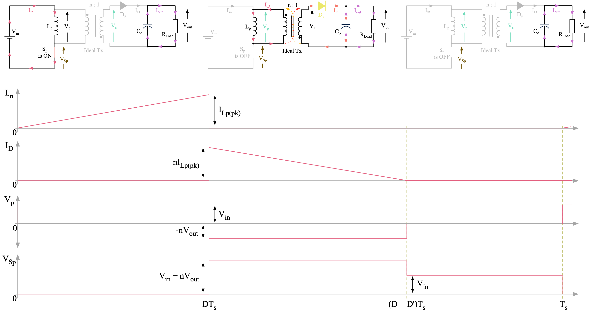

class: title-slide count: false .logo-title[] ## ELECTENG 311 # Electronics Systems Design ### Flyback Converter Analysis & Design .TitleAuthor[Duleepa J Thrimawithana] --- layout: true name: template_slide .logo-slide[] .footer[[Duleepa J Thrimawithana](https://www.linkedin.com/in/duleepajt), Department of Electrical, Computer and Software Engineering (2021)] --- name: S1 # Learning Objectives - Energy storage elements - What is a flyback converter? - Converter topology and how it works - A simplified model of a flyback converter - Steady-state analysis of an ideal flyback converter - What are the expected voltage and current waveforms - Deriving relation between circuit parameters and operating conditions - Example design - Determining the circuit parameters to meet a set of design specifications - Determining the operating conditions - Practical considerations - Understanding the impact of non-ideal transformer - Practical waveforms --- class: title-slide layout: false count: false .logo-title[] # What is a Flyback Converter? ### An Introduction --- layout: true name: template_slide .logo-slide[] .footer[[Duleepa J Thrimawithana](https://www.linkedin.com/in/duleepajt), Department of Electrical, Computer and Software Engineering (2021)] --- name: S2 # Inductors .left-column[ - An inductor is an energy storage element - Energy is stored in the magnetic field that is generated when there is a current flowing through the windings of an inductor, \\[ E\_L = \frac{1}{2} L I\_L^2 \\] - To store energy we can connect an inductor across a DC voltage source and let the current ramp-up to a desired value since, \\[ I\_L = \frac{1}{L} \int\_{0}^{T\_{dur}} V\_{in} \, \mathrm{d}t = \frac{V\_{in}}{L} T\_{dur} \quad \because V\_{in} \textrm{ is constant} \\] - Assume initial current in L is 0A and S<sub>p</sub> turned-off at T<sub>dur</sub> - **I<sub>L</sub> cannot change abruptly** so D circulates I<sub>L</sub> when S<sub>p</sub> is off ] .right-column[ .center[] ] --- name: S3 # Capacitors .left-column[ - A capacitor is an energy storage element - Energy is stored in the electric field that is generated when there is a voltage across the terminals of a capacitor, \\[ E\_C = \frac{1}{2} C V\_C^2 \\] - To store energy we can connect a capacitor across a DC current source and let the voltage ramp-up to a desired value since, \\[ V\_C = \frac{1}{C} \int\_{0}^{T\_{dur}} I\_{in} \, \mathrm{d}t = \frac{I\_{in}}{C} T\_{dur} \quad \because I\_{in} \textrm{ is constant} \\] - Assume initial voltage of C is 0V and S<sub>p</sub> turned-on at T<sub>dur</sub> - **V<sub>C</sub> cannot change abruptly** so D isolates V<sub>C</sub> when S<sub>p</sub> is off ] .right-column[ .center[] ] --- name: S4 # Converter Topology .center[] - A flyback converter consists of a *flyback transformer (Tx)*, *switch (S<sub>p</sub>)*, *diode (D<sub>s</sub>)* and a *capacitor (C<sub>o</sub>)* - The switch is operated at a certain duty-cycle, D<sub>p</sub>, to control the output voltage, V<sub>out</sub> - When S<sub>p</sub> is on during D<sub>p</sub>T<sub>s</sub>, the primary winding, L<sub>p</sub>, of the transformer is connected across the input source, V<sub>in</sub>, causing I<sub>in</sub> to build-up thus storing energy in L<sub>p</sub> - When S<sub>p</sub> is off during (1-D<sub>p</sub>)T<sub>s</sub>, the energy stored in L<sub>p</sub> is released to the output, charging C<sub>o</sub> - D<sub>s</sub> makes sure C<sub>o</sub> is not discharged through L<sub>s</sub> - As we learnt in [PWM control](https://uoa-ee311.github.io/presentations/intro/presentation.html#46), S<sub>p</sub> is operated at a fixed frequency f<sub>s</sub> and therefore T<sub>s</sub> = 1/f<sub>s</sub> --- name: S5 # Flyback Operation - An Analogy (PI) .center[] - We can compare a flyback converter to an analogy where a smaller water bucket is used to fill a bigger water bucket that has a hole - Here the hole represents the load resistor (i.e., smaller R<sub>L</sub> bigger hole) and the water in smaller bucket represents energy stored in L<sub>p</sub> and transferred to output - The larger bucket represents the output capacitor that holds V<sub>out</sub> relatively constant - However, there is a voltage ripple at V<sub>out</sub> since the water level dips and rises between each fill --- name: S6 # Flyback Operation - An Analogy (PII) .left-column[ - If very small or no hole (i.e., large R<sub>L</sub> or open-circuit ) water will overflow (i.e., large voltage **damaging** system) - V<sub>out</sub> can build up to a very large voltage - **electric shock** hazard and **flying debris** from exploding components - Before turning-on a flyback converter make sure **protection circuitry** works and an appropriate **load is attached** - We can reduce the ripple at V<sub>out</sub> by - Increasing the size of the larger bucket (i.e., larger C<sub>out</sub>) - Filling more frequently (i.e., faster f<sub>s</sub>) - To transfer more power (i.e., higher V<sub>out</sub> at smaller R<sub>L</sub>) we can - Increasing the size of the smaller bucket (i.e., larger E<sub>L</sub>) - Filling more frequently (i.e., faster f<sub>s</sub>) ] .right-column[ .center[] ] --- class: title-slide layout: false count: false .logo-title[] # Analyzing a Flyback Converter ### A Steady-State Model --- layout: true name: template_slide .logo-slide[] .footer[[Duleepa J Thrimawithana](https://www.linkedin.com/in/duleepajt), Department of Electrical, Computer and Software Engineering (2021)] --- name: S7 # Transformer Model - We know how a flyback converter works in general terms, so lets mathematically model its operations - The mathematical model will help us determine the parameters of components we should use - To simplify our analysis, we could replace the flyback transformer with it equivalent cantilever model - In our transformer model, L<sub>p</sub> and L<sub>s</sub> are the self-inductances of primary and secondary windings - k, the coupling factor between the two windings is typically greater than 0.98 and also, \\[ \acute{V}\_s = n V\_s \quad \text{and} \quad \acute{I}\_s = \frac{1}{n} I\_s \quad \text{and} \quad \acute{R}\_s = n^2 R\_s \\] \\[ \text{where for T-model} \quad n = \sqrt{ \frac{L\_p}{L\_s} } = \frac{N\_p}{N\_s} \quad \text{and for cantilever model} \quad n = k\sqrt{ \frac{L\_p}{L\_s} } \approx \sqrt{ \frac{L\_p}{L\_s} } \approx \frac{N\_p}{N\_s}\\] .zoom175[ .center[] ] --- name: S8 # A Model of the Flyback .center[] - Lets replace the flyback transformer with its equivalent cantilever model to help our mathematical analysis - For now we are going to **assume k is 1** (later we will investigate the impact of a k less than 1) - In an SMPS, such as this flyback converter, the switch, S<sub>p</sub>, can only be either on or off - We can draw two equivalent circuits, one for when S<sub>p</sub> is on and other for when S<sub>p</sub> is off - We will analyse the circuit assuming it has reached a steady-state - The average change in current through L<sub>p</sub> and voltage across C<sub>o</sub> over one switching period is 0 --- name: S9 # Equivalent Circuits - S<sub>p</sub> is On .center[] - With PWM control, at the beginning of each switching cycle, S<sub>p</sub> will be turned-on for a duration [DT<sub>s</sub>](https://uoa-ee311.github.io/presentations/intro/presentation.html#47) - Turning on S<sub>p</sub> shorts L<sub>p</sub> across V<sub>in</sub> causing I<sub>in</sub> to ramp from 0 to a higher value storing energy in L<sub>p</sub> - Since V<sub>in</sub> is directly applied across the primary side of the ideal transformer V<sub>s</sub> is -V<sub>in</sub>/n - This is because the positive end of transformer secondary is reversed as indicated by the dots - The anode end of D<sub>s</sub> is negative while the cathode end is positive, thus D<sub>s</sub> is reverse biased (i.e. blocking) - We will assume that C<sub>o</sub> is quite large and holds V<sub>out</sub> constant (though it is discharging a bit) --- name: S10 # Equivalent Circuits - S<sub>p</sub> is Off (PI) .center[] - After DT<sub>s</sub>, S<sub>p</sub> will be turned-off until the beginning of the next switching cycle - Turning off S<sub>p</sub> disconnects L<sub>p</sub> from V<sub>in</sub> and thus I<sub>in</sub> is 0A - Since current in L<sub>p</sub> cannot change abruptly, it finds a path to continue through the transformer and D<sub>s</sub> - Energy that was stored in L<sub>p</sub> during DT<sub>s</sub> now replenishes C<sub>o</sub> - As L<sub>p</sub> losses energy, I<sub>D</sub> as well as I<sup>'</sup><sub>D</sub> ramps down to 0A before the end of the switching cycle - We call this **discountinuous mode** operation since current in L<sub>p</sub> is 0 during part of T<sub>s</sub> --- name: S11 # Equivalent Circuits - S<sub>p</sub> is Off (PII) .center[] - After I<sub>D</sub> reach 0A, apart from C<sub>o</sub>, the other components do not contribute to the functionality until the beginning of the next switching cycle - We will call this time the **discountinuous time** - Having a discountinuous time ensures, all the energy we stored in L<sub>p</sub> is delivered to the output - One of our design goals will be to select components that ensure discountinuous mode operation - This is the preferred operation mode for a flyback converter --- name: S12 # Steady-State Waveforms .zoom15[ .center[] ] --- name: S13 # Energy Stored in L<sub>p</sub> .left-column[ - During DT<sub>s</sub> (i.e., when S<sub>p</sub> is on), current in L<sub>p</sub>, which is the same as I<sub>in</sub>, ramps-up from 0 and reaches I<sub>Lp(pk)</sub> when S<sub>p</sub> is turning off, \\[ I\_{Lp(pk)} = \frac{1}{L\_p} \int\_{0}^{DT\_s} V\_{in} \, \mathrm{d}t = \frac{V\_{in}}{L\_p} DT\_{s} \quad \because V\_{p} = V\_{in} \equiv \textrm{ constant} \\] - Using I<sub>Lp(pk)</sub> we can find peak energy stored in L<sub>p</sub>, \\[ E\_{Lp(pk)} = \frac{1}{2} L I\_{Lp(pk)}^2 = \frac{V^2\_{in}}{2L\_p} D^2T^2\_{s} \\] - Thus, we can use D to control the peak energy we store in L<sub>p</sub> - L<sub>p</sub>, V<sub>in</sub> and T<sub>s</sub> are fixed in a given design - PWM controller sets D to regulate V<sub>out</sub> by controlling E<sub>Lp(pk)</sub> ] .right-column[ .center[] ] --- name: S14 # Output Power .left-column[ - All of the energy stored in L<sub>p</sub> (i.e., E<sub>Lp(pk)</sub>), is delivered to the output between DT<sub>s</sub> and T<sub>s</sub> - All this energy is consumed by R<sub>Load</sub> because the average voltage across C<sub>o</sub> is not changing - In steady-state C<sub>o</sub> is effectively not absorbing/loosing energy when averaged over one time period - However, inside each time period C<sub>o</sub> charge and discharge by the same amount leading to a small ripple in V<sub>out</sub> - So we can relate output power to E<sub>Lp(pk)</sub> assuming all components are lossless, \\[ P\_{out} = E\_{Lp(pk)} f\_s = \frac{V^2\_{in}}{2f\_s L\_p} D^2 \quad \because T\_{s} = 1/f\_{s} \\] ] .right-column[ .center[] ] --- name: S15 # Calculating Required L<sub>p</sub> - Since P<sub>out</sub> is proportional to D<sup>2</sup>, maximum P<sub>out</sub> is achieved at maximum D we choose to operate our flyback converter - Therefore, we can determine the value of L<sub>p</sub> that should be used in a flyback converter designed to deliver up to P<sub>out(max)</sub> \\[ L\_{p(req)} \leqslant \frac{V^2\_{in}}{2f\_s P\_{out(max)}} D^2\_{max} \\] - We know P<sub>out(max)</sub>, V<sub>in</sub> and f<sub>s</sub> from design specifications - D<sub>max</sub> can be selected to be 0.5 as it simplifies the design - Since we assumed a lossless flyback converter for this analysis, when designing your converter pick a L<sub>p</sub> value that is slightly smaller than what you calculate - If V<sub>in</sub> is not constant, use the smallest V<sub>in</sub> you expect to operate at (in your design V<sub>in</sub> is constant) --- name: S16 # Calculating Required Turns Ratio (PI) .left-column[ - n determines whether we operate in the discountinuous mode - Note that if in discountinuous mode `\( \lgroup D + D' \rgroup \leqslant 1 \)` - Since the average value of I<sub>Lp</sub> doesn't change in steady-state, \\[ \int\_{0}^{T\_s} V\_p \, \mathrm{d}t = V\_{in}DT\_s - nV\_{out}D'T\_s = 0\\] - Substituting `\( D' = V_{in}D \, / \, nV_{out} \)` in `\( \lgroup D + D' \rgroup \leqslant 1 \)` we get, \\[ n \geq \frac {V\_{in}D} {V\_{out}(1-D)} \\] - Thus, to guarantee discountinuous operation, select an n that is greater than the max value of `\( V_{in}D \, / \, V_{out} (1-D)\)` ] .right-column[ .center[] ] --- name: S17 # Calculating Required Turns Ratio (PII) .left-column[ - n also directly influences maximum voltage stress experienced by S<sub>p</sub> and D<sub>s</sub> \\[ V\_{Sp(max)} = V\_{in} + nV\_{out} \quad \text{and} \quad V\_{Ds(max)} = V\_{in}/n + V\_{out} \\] - When selecting devices to implement S<sub>p</sub> and D<sub>s</sub> we need to make sure they have voltage ratings greater than the maximum voltage stress they experience - Higher voltage rated devices are more expensive - Performance tends to be also poor (e.g., higher losses) - Smaller n leads to lower voltage stress across S<sub>p</sub> at the expense of the voltage stress across D<sub>s</sub> - We need to find a balance between these contradicting needs ] .right-column[ .center[] ] --- name: S18 # Average Currents .left-column[ - Since ripple voltage at V<sub>out</sub> is negligible, I<sub>out</sub> is a constant DC value give by, \\[ I\_{out} = \frac{V\_{out}}{R\_{Load}} \\] - The average value of I<sub>in</sub> is, \\[ I\_{in(av)} = \frac{1}{T\_{s}} \int\_{0}^{T\_s} I\_{in} \, \mathrm{d}t = \frac{1}{2} DI\_{L(pk)} = \frac{V\_{in}}{2L\_p} D^2T\_{s} \\] - The average value of I<sub>D</sub> should be the same as I<sub>out</sub> and is, \\[ I\_{D(av)} = \frac{1}{T\_{s}} \int\_{0}^{T\_s} I\_{D} \, \mathrm{d}t = \frac{1}{2} nD'I\_{L(pk)} = I\_{out} \\] ] .right-column[ .center[] ] --- name: S19 # RMS Currents .left-column[ - RMS currents dictate conduction loss in transformer and S<sub>p</sub> - To calculate RMS of I<sub>in</sub>, which is a linear function, it can be written as `\( I_{Lp(pk)} t /DT_s \)` for `\( 0 \leq t \leq DT_s\)` - RMS of I<sub>in</sub> is therefore give by, \\[ I\_{in(RMS)} = \sqrt { \frac{1}{T\_s} \int\_{0}^{T\_s} I^2\_{in} \, \mathrm{d}t } = \sqrt { \frac{1}{T\_s} \int\_{0}^{DT\_s} \left( \frac {I\_{Lp(pk)}} {DT\_s} t \right)^2 \, \mathrm{d}t } \\] \\[ I\_{in(RMS)} = \sqrt { \frac{1}{T\_s} \left( \frac {I\_{Lp(pk)}} {DT\_s} \right)^2 \left[ \frac{t^3} {3} \right]^{DT\_s}\_0 } = I\_{Lp(pk)} \sqrt {\frac {D} {3}} \\] - Similarly we can show that `\( I_{D(RMS)} = I_{Lp(pk)} \sqrt{D' \, / \, 3 } \)` ] .right-column[ .center[] ] --- name: S20 # Output Voltage .left-column[ - In a flyback converter, like in any switched-mode converter, we use D to control the output voltage across a load R<sub>load</sub> - Since we already know what [P<sub>out</sub>](#S14) is, we can derive the relation between V<sub>out</sub> and D, \\[ P\_{out} = \frac {V^2\_{out}} {R\_{Load}} = \frac{V^2\_{in}}{2f\_s L\_p} D^2 \quad \Rightarrow \quad V\_{out} = \sqrt{ \frac{R\_{Load}}{2f\_s L\_p} } \, V\_{in}D \\] ] .right-column[ .center[] ] --- name: S20 # Demo: A Conceptual Flyback Converter .questions[ When f<sub>s</sub>=100kHz, D=0.5 and R<sub>load</sub>=100Ω, derive what I<sub>Lp(pk)</sub>, P<sub>out</sub>, V<sub>out</sub>, D', V<sub>Sp(max)</sub>, V<sub>Ds(max)</sub>, I<sub>in(av)</sub>, I<sub>D(av)</sub>, I<sub>in(RMS)</sub>, I<sub>D(RMS)</sub> and V<sub>out</sub> are. Show answers match simulation. Explore the behavior when D and R<sub>load</sub> change. ] .center[ <iframe src="example2.html" width="900" height="390" frameborder="0"></iframe> ] --- class: title-slide layout: false count: false .logo-title[] # How to Design a Flyback Converter ### An Example --- layout: true name: template_slide .logo-slide[] .footer[[Duleepa J Thrimawithana](https://www.linkedin.com/in/duleepajt), Department of Electrical, Computer and Software Engineering (2021)] --- --- class: title-slide layout: false count: false .logo-title[] # What to Expect from a Practical Flyback Converter ### Impact of Transformer Leakage Inductance --- layout: true name: template_slide .logo-slide[] .footer[[Duleepa J Thrimawithana](https://www.linkedin.com/in/duleepajt), Department of Electrical, Computer and Software Engineering (2021)] --- --- class: title-slide layout: false count: false .logo-title[] # Questions?